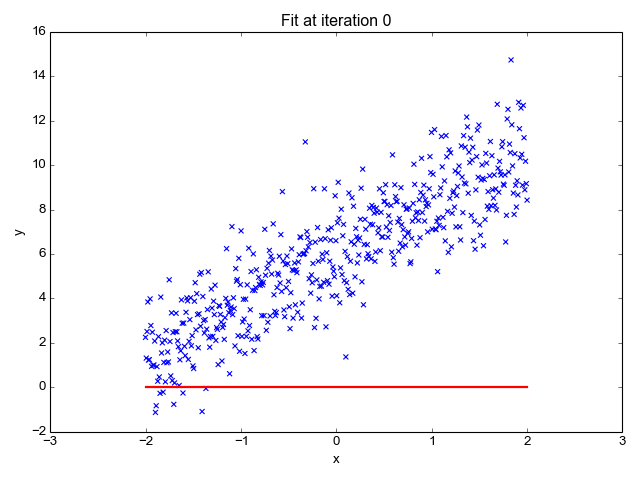

Linear regression attempts to model the relationship between two variables by fitting a linear equation to observed data. It basically performs the task to predict a dependent variable value (y) based on a given independent variable (x). So, this regression technique finds out a linear relationship between x (input) and y(output). Hence, the name Linear Regression.
|  |
|---|